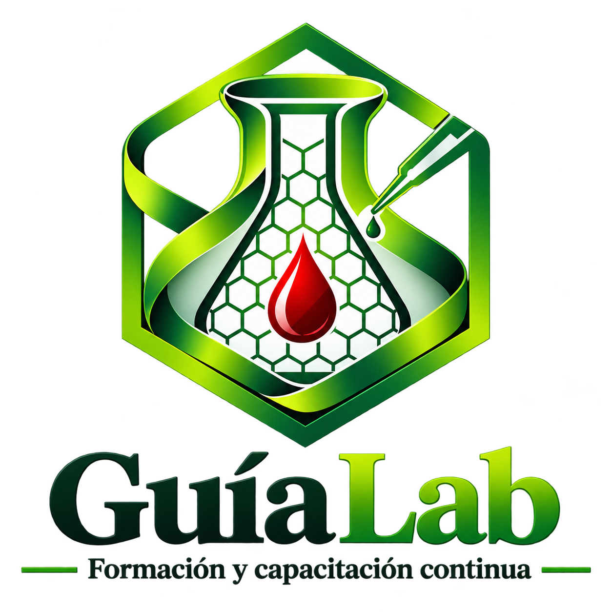

Formación para laboratoristas
Manual de Gestión Beta 1.8 | Posadas, Misiones
Modo estudiante
Elegí un sector o buscá un estudio. En cada ficha vas a encontrar la preparación del paciente y el manejo técnico de la muestra.
Material de apoyo para formación. Validá siempre el procedimiento vigente con la dirección técnica y el protocolo de tu institución.